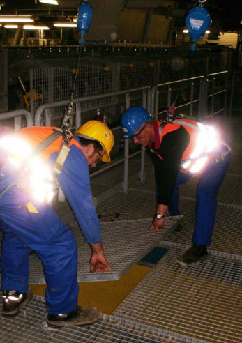

Folgende Fragen sollten bereits in der Planungsphase geklärt werden:
Folgende Fragen sind vor der Arbeitsaufnahme zu klären:
Die Kran- bzw. Hebezeugführung darf auf Bau- und Montagestellen in der Regel nur auf Zeichen einer einweisenden Person das Gerät, mit oder ohne Last, bewegen. Hierzu ist ein Einweiser oder eine Einweiserin zu benennen. Fehlt die einwandfreie Sicht auf die einweisende Person, muss eine Sprechfunkverbindung eingesetzt werden. Die üblichen Handzeichen zur Einweisung sind in der DGUV Information 209-013 "Anschläger" dargestellt.
Lasten nie über Personen hinwegführen. Der Gefahrbereich ist von Personen freizuhalten, z. B. durch Absperren und Kennzeichnen.
Krane und andere Hebezeuge dürfen nur von ausgebildetem, eingewiesenem und beauftragtem Personal bedient werden.
Hubarbeitsbühnen dienen dem Transport von Personen. Müssen in Ausnahmefällen einzelne Gitterroste mit transportiert werden, ist insbesondere darauf zu achten, dass die zulässige Belastung des Gerätes nicht überschritten wird und die Lasten nicht über die Umwehrung des Arbeitskorbes ragen.
Für das Anschlagen von Rostpaketen, aber auch einzelner größerer Roste, werden als Anschlagmittel meist Hebebänder oder Seile verwendet. Aus deren Kenn- zeichnung geht die Tragfähigkeit hervor (Abb. 3-15). Die DGUV Information 209-021 "Belastungstabellen für Anschlagmittel aus Rundstahlketten, Stahldrahtseilen, Rundschlingen, Chemiefaserhebebändern, Chemiefaserseilen, Naturfaserseilen" sollte den Anschlägern und Anschlägerinnen an der Montagestelle zur Verfügung stehen.
Weiter ist zu beachten:
Anschlagmittel
Die Wirbelsäule des Menschen ist für eine aufrechte Körperhaltung geschaffen und für das Heben und Tragen von Lasten nur bedingt geeignet (Abb. 5-1).

Abb. 5-1 Verlegen von Gitterrosten in ergonomisch ungünstiger Haltung
Deshalb sind Handtransporte auf das notwendigste Maß zu beschränken.
Geeignete Hilfsmittel (z. B. Gabelhubwagen, Stapler, Krane und Winden) sollten den Beschäftigten zur Verfü- gung stehen, um körperliche Belastungen möglichst gering zu halten. Ist der Einsatz solcher Hilfsmittel nicht möglich, z. B. beim Verlegen einzelner Roste in schwer zugänglichen Bereichen, lassen sich Gesundheitsschäden durch richtige Hebe- und Tragetechniken vermeiden. Auch hierüber sollte das Personal unterwiesen werden.
Wenn möglich sollten zur Verringerung der körperlichen Beanspruchung Trage- bzw. Verlegehilfen verwendet werden.
Das Arbeitsschutzgesetz (§§ 5 und 6) sowie die Lastenhandhabungsverordnung (§ 2) fordern die Beurteilung der Arbeitsbedingungen, wenn Gefährdungen bei der manuellen Handhabung von Lasten nicht sicher auszuschließen sind. Für diese Gefährdungsanalyse werden von der Bundesanstalt für Arbeitsschutz und Arbeitsmedizin (BAuA) sowie dem Länderausschuss für Arbeitsschutz und Sicherheitstechnik (LASI) die Leitmerkmalmethoden empfohlen.